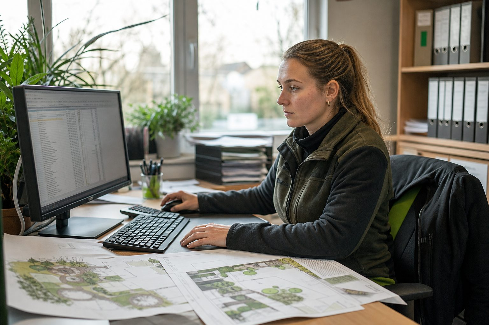

DATAflor BUSINESS: Die Branchensoftware, mit der der GaLaBau seit 40 Jahren kalkuliert
Kalkulation, Aufmaß, Abrechnung, Zeiterfassung und Adressen in einem System, entwickelt in Göttingen seit 1982. Was die verbreitetste GaLaBau-Software leistet, wo sie stark ist und was Betriebe vor der Einführung wissen sollten.

- Ein System für Angebot, Kalkulation, Aufmaß, Abrechnung, Zeiterfassung und Adressen – nach Herstellerangaben nutzen rund 5.000 Betriebe die Software.
- Stärke ist die Tiefe in der Kalkulation und die Anbindung an CAD (GREENXPERT) und Baustellen-Apps; Schwäche ist der Einführungsaufwand für kleine Betriebe.
- Preise gibt es nur auf Anfrage, modular nach Arbeitsplätzen und Modulen; für Ausbildung und Einstieg bietet der Hersteller eine kostenlose Version an.
- Hersteller
- DATAflor AG, Göttingen (gegründet 1982)
- Kategorie
- Branchensoftware (ERP) für Garten- und Landschaftsbau
- Module
- Angebot und Kalkulation, Aufmaß und Abrechnung, Zeiterfassung, Adressverwaltung, Kostenplanung; CAD-Ergänzung GREENXPERT
- Verbreitung
- Nach Herstellerangaben rund 5.000 Anwenderbetriebe
- Preis
- Auf Anfrage, modular nach Arbeitsplätzen; kostenlose Version für Ausbildung und Einstieg (Bereich Campus)
- Für wen
- Betriebe ab etwa fünf Mitarbeitern, die Kalkulation, Aufmaß und Abrechnung sauber verbinden wollen
- Stand
- Herstellerangaben, abgerufen September 2026
Unabhängig recherchiert auf Basis von Herstellerangaben und Fachpresse. Keine bezahlte Platzierung, keine Testmuster.
Wer in der Branche nach Kalkulationssoftware fragt, bekommt in den meisten Betrieben denselben Namen zu hören. DATAflor aus Göttingen entwickelt seit 1982 Software für den Garten- und Landschaftsbau; das Hauptprodukt BUSINESS bündelt Angebot, Kalkulation, Aufmaß, Abrechnung, Zeiterfassung und Adressverwaltung in einem System. Nach Angaben des Herstellers arbeiten rund 5.000 Betriebe damit.
Was das System kann
Der Kern ist die Kalkulation: Leistungsverzeichnisse aus GAEB-Dateien einlesen, Positionen mit Stammdaten kalkulieren, Angebote ausgeben, Aufträge überwachen. Daran hängen Aufmaß und Abrechnung – Teil- und Schlussrechnungen nach VOB, mit Nachträgen und Mengenkontrolle – sowie die Zeiterfassung, die Stunden aus der Baustelle auf Aufträge und Lohn verteilt. Wer plant, ergänzt das CAD-Programm GREENXPERT desselben Herstellers, das Pläne und Mengen direkt in die Kalkulation übergibt.
Für den Betrieb heißt das: Ein Auftrag durchläuft von der ersten Anfrage bis zur Schlussrechnung dasselbe System, und der Bauleiter sieht am Monatsende, ob die Baustelle Geld verdient hat. Das ist der Grund, warum die Software in Betrieben mit Bauleitung und Kalkulationsabteilung Standard ist.
Wo sie an Grenzen kommt
Die Tiefe hat einen Preis: Einführung, Schulung und Stammdatenpflege kosten Wochen, nicht Tage. Ein Fünf-Mann-Betrieb, der seine Angebote bisher in Excel schreibt, braucht einen Verantwortlichen im Büro, der das System trägt – sonst bleibt es ein teures Adressbuch. Die Preise nennt der Hersteller nur auf Anfrage; sie richten sich nach Modulen und Arbeitsplätzen. Für Ausbildung und Einstieg gibt es eine kostenlose Version (Bereich „Campus“), mit der Betriebe und Berufsschulen die Kalkulationslogik kennenlernen können.
Alternativen
Am Markt gibt es weitere Branchenlösungen und allgemeine Handwerkersoftware, die Angebot und Rechnung abdecken, aber in Kalkulation und VOB-Abrechnung weniger tief gehen. Für Betriebe, die vor allem Zeiten und Baustellen dokumentieren wollen, sind Apps wie 123erfasst oder PlanRadar der einfachere Einstieg – sie ersetzen die Kalkulation nicht, verbinden sich aber damit.
Für wen
Für Betriebe ab etwa fünf Mitarbeitern mit eigener Kalkulation, für alle, die öffentliche Aufträge nach VOB abrechnen, und für Betriebe, die wissen wollen, welche Baustelle Ertrag bringt. Für den Zwei-Mann-Betrieb mit Privatkunden reicht oft eine schlankere Lösung – bis der dritte Mitarbeiter kommt.
Quellen
- DATAflor: Software für Garten- und Landschaftsbau (Module, Beschreibung) – www.dataflor.de/galabau/
- DATAflor: Kostenlose Version (Bereich Campus) – www.dataflor.de/campus/kostenlose-version/
- Wer liefert was: DATAflor AG – Marktführer für GaLaBau-Software seit über 35 Jahren (Gründung 1982, Göttingen) – www.wlw.de/de/firma/dataflor-ag-601241
- dergartenbau.ch: Dataflor – Software für den Garten- und Landschaftsbau – www.dergartenbau.ch/artikel/dataflor-software-fuer-den-garten-und-lan...
Kommentare
Noch keine Kommentare. Schreiben Sie den ersten.

PlanRadar: Mängel, Fotos und Bautagebuch vom Handy in den Bericht
Eine App, die Fotos, Notizen und Sprachaufnahmen von der Baustelle in Bautagebücher, Mängelberichte und Abnahmeprotokolle verwandelt. Über 170.000 Nutzer in mehr als 75 Ländern – und ein Preismodell, das auch kleine Betriebe erreicht.

123erfasst: Zeiterfassung, die nebenbei das Bautagebuch schreibt
Stunden, Standorte, Fotos, Material und Wetter kommen vom Handy der Kolonne direkt ins Büro – und die App macht daraus automatisch das Bautagebuch. Eine der verbreitetsten Baustellen-Apps im Steckbrief.

KI im GaLaBau: Angebot per Prompt, Aufmaß per Drohne – was heute schon funktioniert
Softwareanbieter versprechen automatische Angebote und Pflanzempfehlungen aus Standortdaten. Zwischen Messe-Demo und Betriebsalltag liegt ein Stück Weg. Was 2026 praxistauglich ist, was in der Entwicklung steckt und wo die Grenzen liegen.